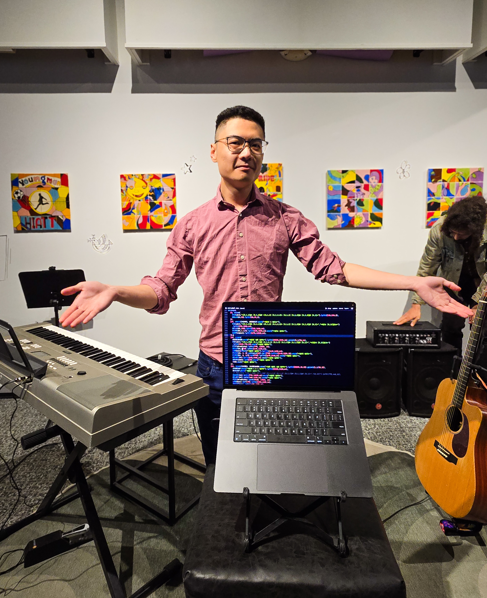
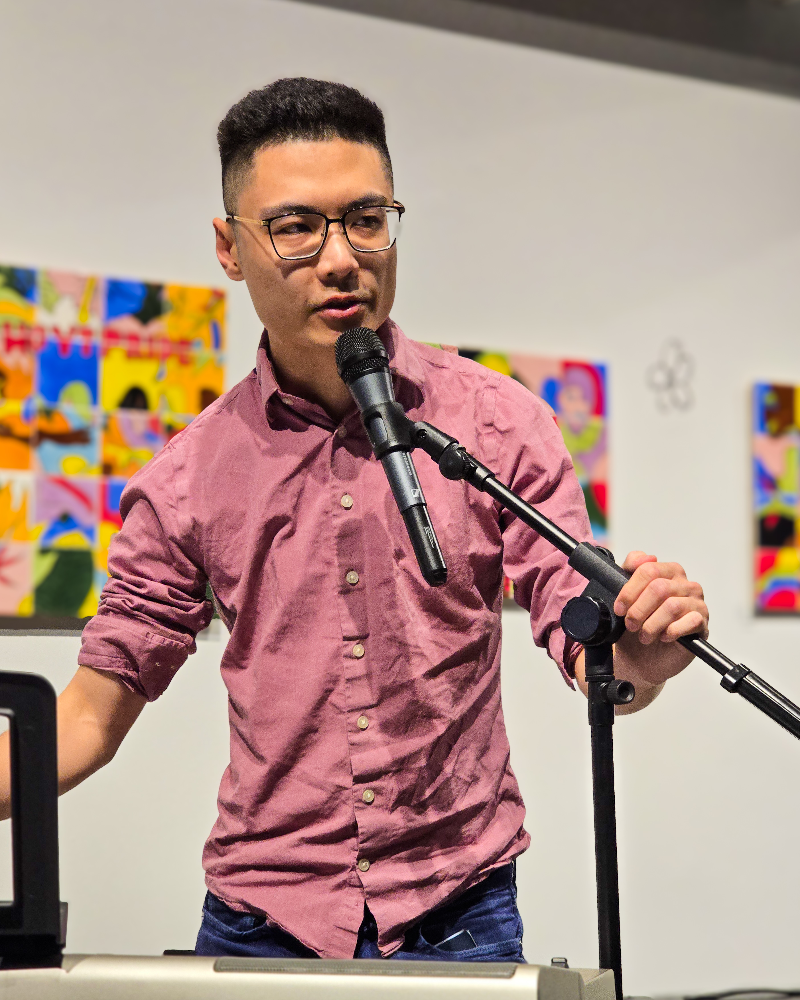
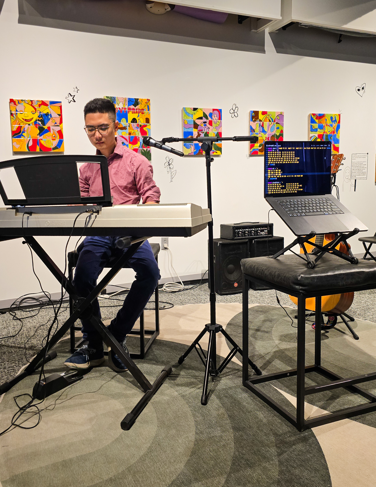
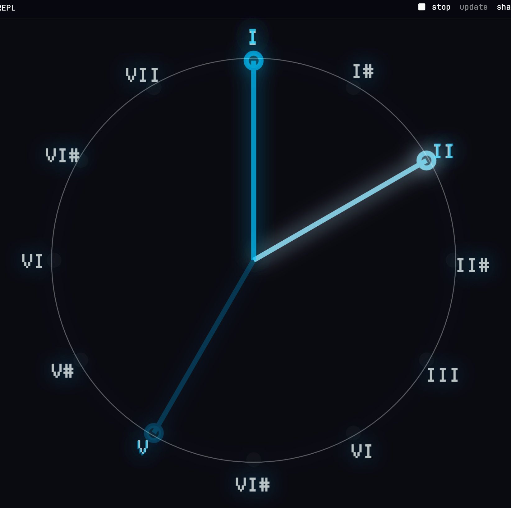
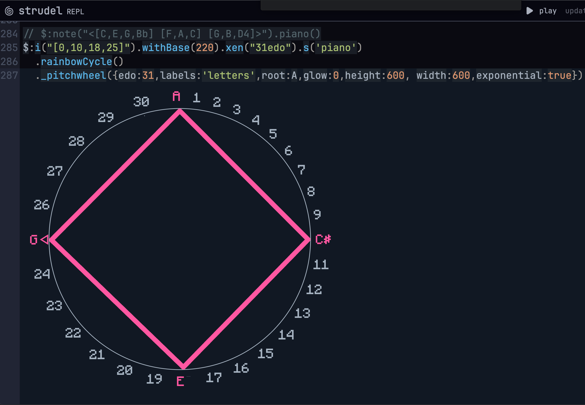

ArtForce Iowa Open Mic w/ Gothic Castle Dance
I introduced the audience to my livecoding technique using the piano for composition and how I transcribe it into code.

Standing by a piano keyboard and in front of the laptop, I introduced myself and my livecoding techniques -
"Who has heard of livecoding music before?" - answers no one.
I play a short verse from my new song "Gothic Castle Dance" on the piano keyboard before evaluating my piece of code live.▶ Watch recorded stream on Youtube
Live Algorave w/ new track release Sunrisen Horizon
I played my livecode set alongside talented visual artist
Shannon Morrisey (Masters in Design, UIC) as well as
Lele Buonerba (DJ / exhibition artist)
The event was held at WNDR Musuem, Chicago on April 10th.
I wrote this song as to convey the feeling of starting new beginnings and leaving the old behind. There is an element of "structured" playfulness, where each segment conveys a particular feeling journey.
I also wrote the pitchwheel improvements as you can see here, with custom labeling and colors and line thickness you can adjust!
Click to expand full article
April 10th - audio.visual.code at WNDR museum, Chicago
It is my first algorithmic rave event as a participant. And I owe many thanks to the organizers Ted (Faculty, UIC), Pedro (Professor, UIC School of Design) & Glossing/Aria (amazing live coding artist/engineer) for her unwavering support!
On the technical side, I spent the last 4 months learning Strudel (Tidal in JS). Then wrote my own pitchwheel() to better see associations between chords and polygons. Then built the Waveflower app in order to see audio signals in the form of spiral / flower geometry.
The aim for this "presentation" is twofold: one, introduce audience to the possibility of composing rich soundtracks with only code and audio samples; and two, to create an immediate association between music and math through pitch/signal accurate visual patterns.
I've presented two completed tracks over my entire course of working in Strudel. But there is a lot of work behind the scenes that was not shown here. Although I wish to convey the music theory involved - on how I justified the intonation to stabilize some of the flower patterns, or how I arranged my tracks in a more structured and easy-to-follow manner, there is only so much I can show on a live screen on a 30-minute set.
But some people noticed: in responding to the chip-tune-like melodies, in the way they move their bodies, in the way they cheered and danced and clapped their hands. Because in that moment I knew, I have done something right.
There is much to be learned still as I can swear that this will not be my last. I certainly have plans to do live workshops - to not only sharing what I have learned, but also helping people understand that: > "you are an artist and so is everyone! so don't be afraid to show your creativity to the world!"
Through this experience I understood that there is no technical hurdles we cannot overcome. So really there isn't a limit to creativity you can bring to the table as well.
Through these live coding communities, I finally understood what it meant when they stood by the principal of "everyone is welcomed" - where no matter your experience, age, ethnicity, gender identification, or how "weird" your art looks or sounds, YOU ARE WELCOMED HERE. And as long as you can show the world something new and interesting that has yet to be shown or previously created, you will be valued - with encouragement especially if you are in one of these marginalized groups.
And no, we don't do any sort of A.I here - communities generally reject any use of generative A.I. in shows. Just like other art forms, algorithmic art should be fundamentally human.
There is a saying that "your laptop is an instrument". In other words, a tool of choice to make music. But we do not idolize any specific kind of software here - so whether you create with Strudel/JS/Tidal/touch designer/ bash programming it does not ultimately matter. As long as you show your original work and do so with dignity./ɡuːi/
While Ying Chyi is my first name, Gooi is my given last name and what I go by. It is pronounced as "gooey".
Click to listen — [view source]
 Waveflower App
Waveflower App
See it live in production:
Video recording of triangle wave manifesting as a lotus pattern (blue); saw wave manifesting as a symmetrical spiralling balloon pattern (pink)Video recording of a multiple supersaw voices manifesting as bird-winged patterns (blue + cyan)
Pitchwheel Improvements
Available as a prebake via livecoding editor Strudel.cc - please add the following line to your Strudel editor to load the changes:
await import('https://waveflower.org/pre.js')
A major 5th chord displayed on the pitchwheel in natural exponential scale, that presents itself as an isoceles triangle.

Example of using the pitchwheel as a clock using customized labels
Example of using the pitchwheel to construct various 7th chords in microtonal Equal Division of Octave (EDO) scalesWith thanks to the TidalCycles OpenCollective contributors
 Intro to Chords + Scales
Intro to Chords + Scales
Curious about how chord progressions work? Wonder why some chords go better/worse with antoher? How about using chords to express emotions in a story?
I introduced the basic chords in a major scale. Aside from learning various ways of arranging chords, I also introduced voicing, inversions, scales and transposition.
Link to workshop: Watch on YouTube
Previous Workshop
Intro to Sound Design
Ever been curious about what goes into synthesizing sounds? Want to make your own supersaw? Or maybe you want to recreate synth leads you heard elsewhere?
I introduced foundational sound design concepts, then showed each step in designing your own "supersaw" or super-shapes.
Link to workshop: Watch on YouTube
Sunrisen Horizon

Link to album: https://music.waveflower.org
For Business/Collab Inquiries
Please contact me via email at gooi@waveflower.org
...if you just wanted to say "Hi!"
You may also reach out to me via Discord if you prefer: Waveflower's Discord Server